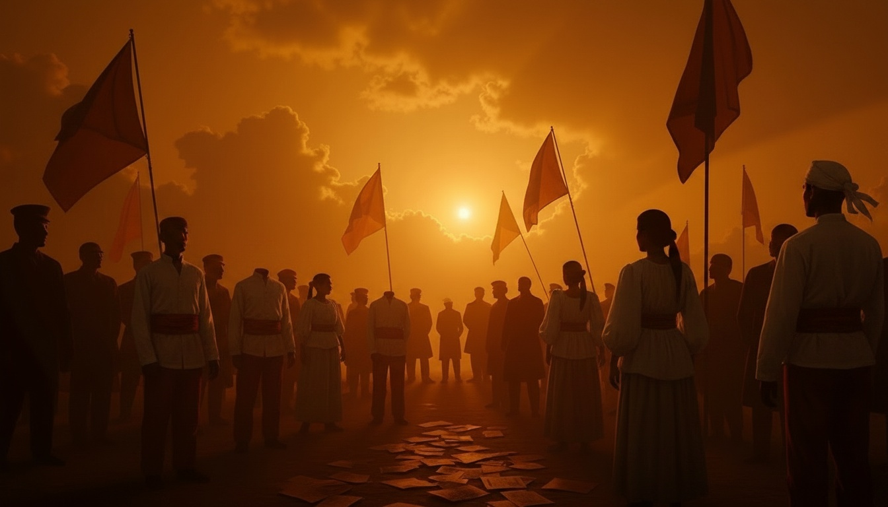

Kartilya
ng Katipunan
Moral Compass of the Philippine Revolution
Discover the thirteen timeless teachings written by Emilio Jacinto that guided the Filipino revolutionaries toward freedom, honor, and moral excellence.
The Revolutionary
Principles That
Shaped a Nation
Written by Emilio Jacinto, the Kartilya ng Katipunan served as the moral code of the revolutionary society. It transformed ordinary Filipinos into patriots who understood that true freedom demanded not just courage, but moral excellence.
Emilio Jacinto
Brains of the Katipunan, Author of the Kartilya
Moral Teachings
Timeless principles for righteous living
Year Founded
The spark of the Philippine Revolution
Katipunan Members
Ordinary Filipinos united for freedom
Historical Artifacts of the Philippine Revolution
Ang Tatlumpu't Tatlong Aral
Thirteen Moral Principles for Filipino Patriots, guiding every Katipunero toward a life of honor, service, and love for country.
Purposeful Living
Ang Buhay na May Layunin
“Ang buhay na hindi ginugugol sa isang malaki at banal na kadahilanan ay kahoy na walang lilim, kung di manawari ay damong makamandag.”
A life that is not dedicated to a great and noble cause is like a tree without shade, if not a poisonous weed.
True Virtue
Ang Totoong Kabutihan
“Ang gawang magaling na nagbubuhat sa pagpupuri sa sarili at hindi sa talagang busilak na loob ay isang kahambugan, hindi kabutihang loob.”
A deed done for praise rather than pure intent is vanity, not virtue.
Holiness Through Service
Ang Kabanalan sa Paglilingkod
“Ang tunay na kabanalan ay ang pagkakawang-gawa, ang pag-ibig sa kapwa at ang isang kilos na gawin ay ang marangal na asal.”
True holiness is helping others, love of neighbor, and acting with noble conduct.
Courage and Duty
Ang Tapang at Tungkulin
“Sa isang tao ay dapat lamang na magtaglay ng isang diwang timtiman sa pagtupad ng tungkulin; ang katapangan ay hindi kailangang gumamit ng dahas.”
One must possess a spirit of complete dedication in fulfilling duty; courage need not resort to violence.
Overcome False Modesty
Paglaya sa Kasinungalingang Hiya
“Ang may masamang hiya ay hindi makakagawa ng isang dakilang bagay, sapagkat siya ay natatakot sa paninisi ng mga taong walang magawang mabuti.”
A person with false modesty cannot accomplish great deeds, for they fear the criticism of those who do nothing good.
Respectful Speech
Ang Paggalang sa Pananalita
“Ang may pakikipagkaibigan sa lahat ng laging maayos na salita ay siyang tunay na may malayang kaisipan, ngunit ang taong palabiro ay hindi kailan man.”
One who speaks kindly to all has true freedom of thought, but a person given to jest never does.
Wisdom and Patience
Ang Karunungan at Pagtitimpi
“Ang tunay na lalaki ay may pagtitimpi, matalino, at marangal na kilos. Ang lalaking walang bait ay hindi nagtatagumpay sa kanino mang pakikipaglaban.”
A true man is patient, wise, and acts with honor. A man without reason does not triumph in any struggle.
Love of Country
Ang Pag-ibig sa Tinubuang Lupa
“Ang pag-ibig sa tinubuang lupa ay mahigit sa lahat; ang kadahilanan nito ay hindi sukat kalabanin ng sinumang tao.”
Love of country is above all; no man can overcome this cause.
Active Participation
Ang Aktibong Paglahok
“Ang taong hindi magkakaloob sa isang mabuting gawain ay walang karapatang sumapi sa Katipunan; ang karapatang iyan ay dapat pagyamanin ng isang taong lubos na mabuti.”
A person who does not contribute to a good deed has no right to join the Katipunan; that right must be enriched by a thoroughly good person.
Equality Before Law
Ang Pagkakapantay-pantay
“Ang lahat ng tao ay magkakapantay; ang matalino at ang mangmang, ang mayaman at ang mahirap, ang dakila at ang hamak ay pantay-pantay sa harap ng batas.”
All people are equal; the wise and the ignorant, the rich and the poor, the great and the lowly are equal before the law.
Honor Above Life
Ang Karangalan Higit sa Buhay
“Ang karangalan ay ang kasalukuyang diwa ng lahat ng mga tao. Ang walang karangalan ay patay na kung hindi man ay dapat na mamatay.”
Honor is the present spirit of all people. One without honor is dead, if not should be dead.
True Bravery
Ang Tunay na Katapangan
“Ang taong matapang ay nagtitimpi ng loob, hindi natatakot at walang tinataksan. Ang tapang ng isang lalaki ay nasa kanyang pagtitimpi ng loob.”
A brave person is patient, unafraid, and flees from nothing. A man's courage lies in his patience.
Wisdom Over Passion
Ang Karunungan Higit sa Damdamin
“Ang taong matalino ay nagpipigil sa kanyang damdamin, nag-iisip muna bago kumilos at hindi kailanman ginagamit ang kaluluwa sa kahinaan ng katawan.”
A wise person restrains their emotions, thinks before acting, and never uses the soul for the weakness of the body.
Mga Tinig ng Kasaysayan
Voices from the revolution who witnessed how the Kartilya shaped the moral fabric of the Filipino struggle for independence.
The Katipunan Assembly
Secret gathering of revolutionaries, circa 1896
The Kartilya is the soul of the Katipunan, guiding every revolutionary with moral clarity in the darkest hours of our struggle for freedom.
Andres Bonifacio
Supremo of the Katipunan, 1896
Timeline of the Revolution
1892
Andres Bonifacio founded the Katipunan in Tondo, Manila.
1896
Emilio Jacinto authored the Kartilya ng Katipunan, the society's moral code.
1896
The Cry of Pugad Lawin - revolutionaries tore their cedulas, marking open revolt.
1898
The Philippine Declaration of Independence, fulfilling the Kartilya's vision.
Tawag sa Bayan
The Kartilya's wisdom transcends centuries, offering Filipinos today a moral compass for navigating modern challenges with honor and unity.
Social Justice
The Kartilya's call for equality before law remains a powerful voice against inequality, corruption, and social injustice in modern Philippine society.
National Unity
In an age of division, the teachings remind Filipinos that love of country transcends political differences, calling for bayanihan in every challenge.
Ethical Leadership
True virtue, honorable conduct, and wisdom over passion are timeless standards for leaders who serve the people with integrity and dedication.
Youth Empowerment
The Kartilya inspires young Filipinos to find purposeful living, dedicating their lives to causes greater than themselves and their immediate interests.
Community Service
Holiness through service encourages Filipinos to actively participate in community building, proving that patriotism is lived through everyday good deeds.
Cultural Pride
Preserving revolutionary heritage strengthens national identity, reminding every Filipino of the sacrifices made for the freedoms they enjoy today.
Honor the Sacrifice of Our Heroes
Every Filipino has a role in preserving the legacy of the revolution. Share the Kartilya with your family, teach its principles to the young, and live its values in your community. The revolution continues through you.
Pagmumuni-muni
The Kartilya invites every Filipino to look inward. Take a moment to reflect on how these timeless teachings can shape your character and actions today.
Ang tunay na lalaki ay may pagtitimpi, matalino, at marangal na kilos.
Emilio Jacinto, Kartilya ng Katipunan